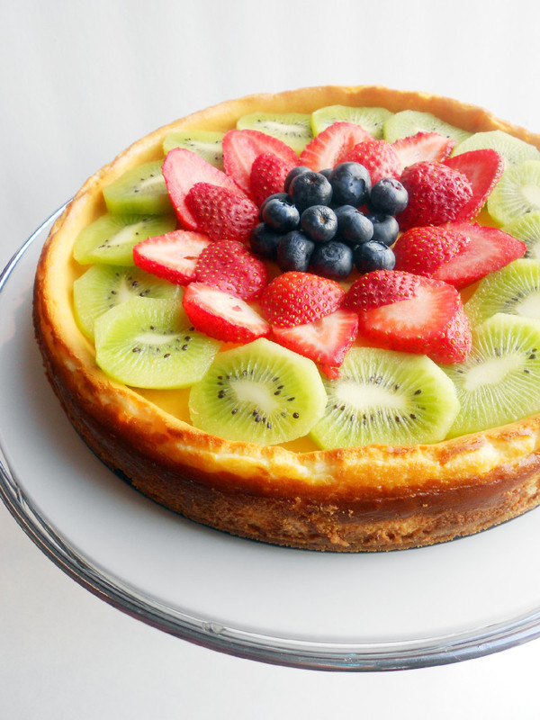

back to Recipes
Cheesecake

Description
It's a perfect starter recipe for the novice baker. It's simple, elegant, and produces very delicious results.
Ingredients
Crust
- 150 g graham cracker crumbs
- 70 g melted butter
Filling
- 650 g Philadelphia Cream Cheese, room temperature
- 200 ml heavy cream
- 2 eggs
- 100 g sugar
- pinch of vanilla powder
- pinch of salt
Steps
- Preheat oven to 325 degrees F.
- Line an 8-inch springform pan with parchment paper. (I used a 10-inch springform pan and didn't line it). Wrap exterior of the pan, including the base, in a double layer of foil (I skipped this step because I usually just place a pan of boiling water on the rack underneath the cheesecake)
- In a small bowl, whisk together the graham cracker crumbs with the melted butter until all crumbs are moistened. Press the crumb mixture firmly into the bottom of the pan, and up the sides, about one inch. It helps to use the bottom of a measuring cup to press the crumbs out evenly and smoothly. Cover and refrigerate the crust while you are making the filling.
- Using a hand mixer, beat the cream cheese on medium speed until fluffy and creamy. In a stand mixer, whip the heavy cream with the sugar and vanilla until stiff peaks form. Add to the cream cheese and beat until incorporated. Add in the eggs and salt, and beat on low just until combined. Pour the cream cheese filling into the pan, over the crust.
- Place the springform pan inside a large pan. Pour boiling water into the large pan, halfway up the sides of the pan. Bake for 70-75 minutes or until sides of cake appear firm and center jiggles slightly. Turn off the oven and let the cheesecake cool in the oven for at least one hour.
- Chill cheesecake in refrigerator for at least 8 hours, or overnight. Garnish with your choice of fruit before serving, if desired.
Adopted from here